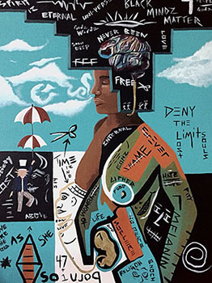

I've been painting for over 8 years now using Acrylic as my medium. Illustrating has always been my passion and through painting I am able to ecpress myself through colors and abstract ideas that I place together to create a finished piece.

Through my love of design I came across the Adobe Creative Cloud. After hours and hours of practice in Photoshop, Illustrator, Dreamweaver and many more, I started creating logos and manipulation images for all kinds of awesome projects.

While attending school for Graphic Design, I stumbled upon a new craft. Web Development has been another avenue for my creativity and passion for design. I absolutely love to design webpages, and applications using HTML/CSS, React, Javascript, and many more technologies.